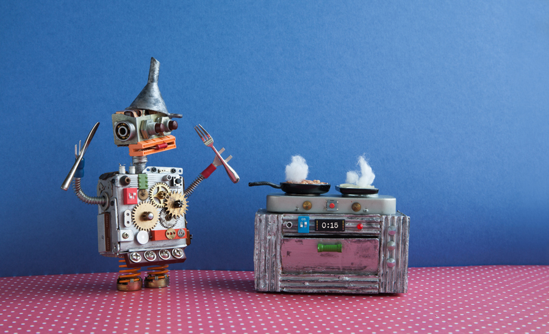

Pour valider ce cursus de formation nous vous proposons de travailer sur une projet fictif de développement d’un robot pour la société Mac Donald. Ce robot sera capable de servire uniquement un menu spécifique et dans toutes les déclinaison possible. Nosu allons définir ensemble les étapes et les temps de préparation et vous aurez à réaliser une étude algorithmique complète que vous dervrez baser sur les notions vue lors de ce cursus
Pour la réalisation de cette exercice vous devez penser à toutes les étapes pour permettre à notre robot de fonctionner de la prise de commande à la distribution du menu en passant par le paiement. Aucune étapes ne doit être oubliées car vous devez concidérer que le robot est à 100% autonome. Nous ajoutons également des contraintes qui sont de nature à vous faire réfléchir sur l’enchainement des tâches et leur organisation :
Dans le cadre de ce projet nous vous demandons de fournir tous les éléments qui vous ont permit de réaliser le projet : documentation, liens, ressourses,… L’un des aspect qui sera mit en avant est la capacité à expliquer et de justifier une démarche; il vous est fortement reccomandé de créer un fichier en MarkDown retraçant toutes les étapes que vous avez suivi.
En ce qui concerne les éléments obligatoire, vous devrez réaliser :
Il est probale que les quantités différentes induisent des organisations différentes
Nous déffinisons les différentes valeurs utilise pour notre exercice :